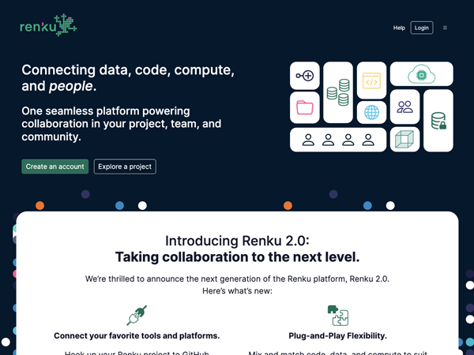
Renkulab.io
Rebranding & web design
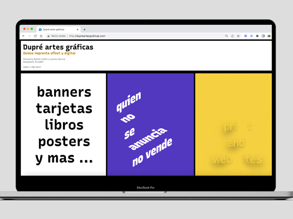
Website Dupré artes gráficas
Web design & font animations
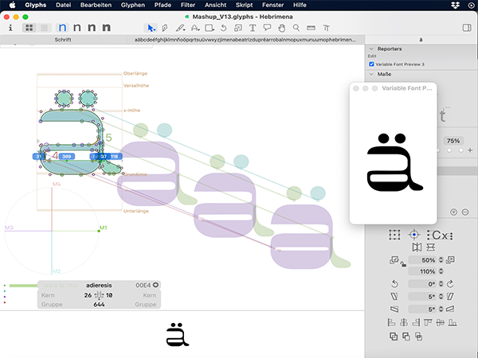
Font design
CAS Type & Brand 2022
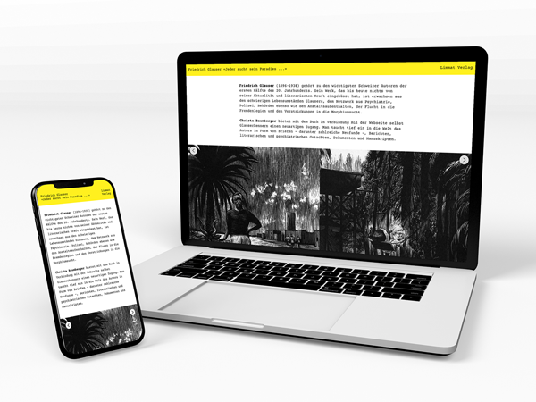
Website Friedrich Glauser
CAS Digital Typography (UI/UX)
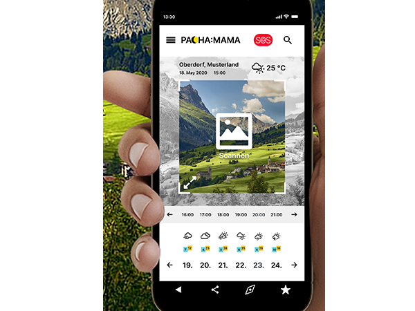
Wetter App - Mobile Prototype
CAS Digital Typography (UI/UX)
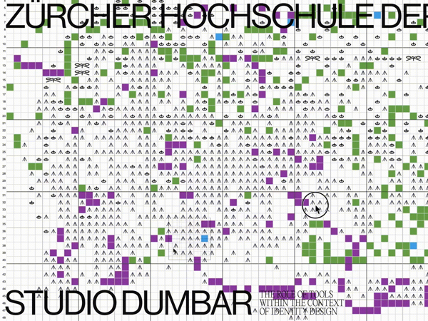
Motion Design
Workshop with Studio Dumbar

EY Insurance CFO Survey
Branding. Go to Market

CRO Survey
Branding. Go to Market
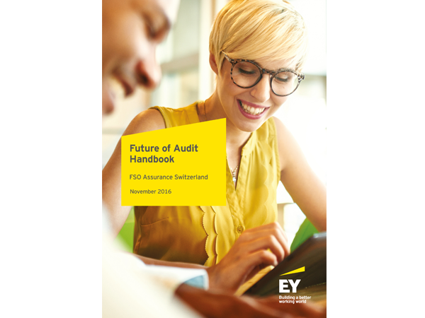
Future of Audit
Go to Market. Handout
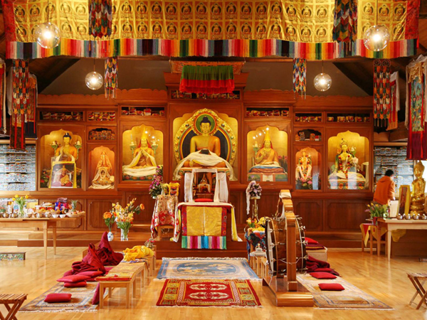
Who believes sees more
Photo reportage: Part I
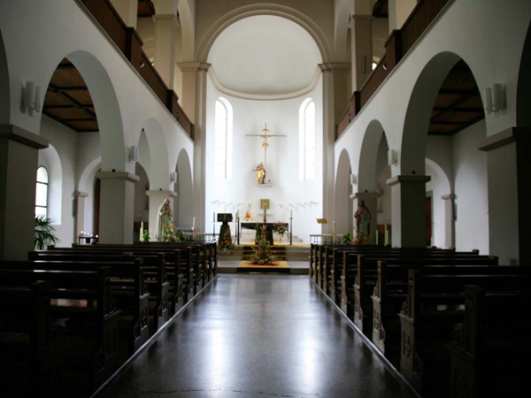
Who believes sees more
Photo reportage: Part II
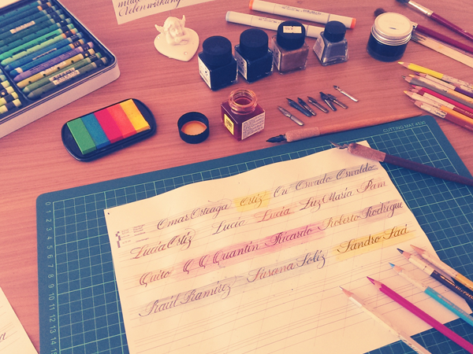
Calligraphy
and handmade paper crafts
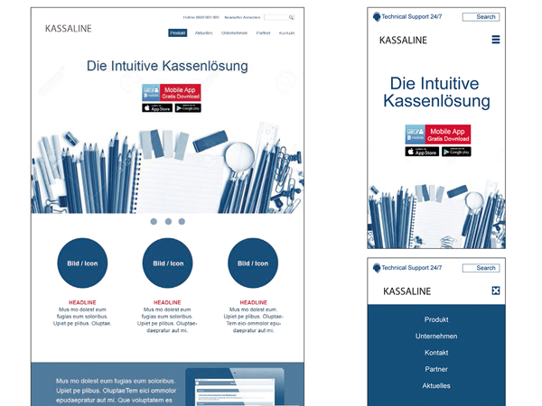
Web design proposals
Website Design
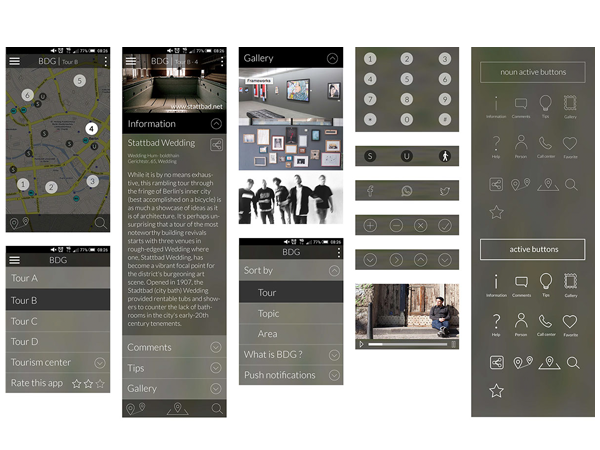
The Berlin Design Guide App
Internship project
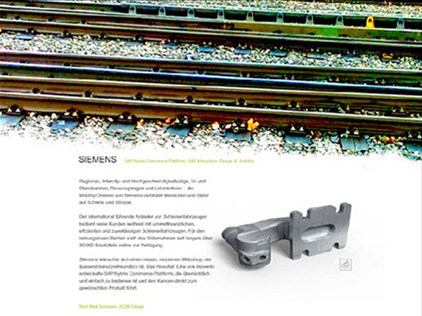
Website design proposals
Internship project
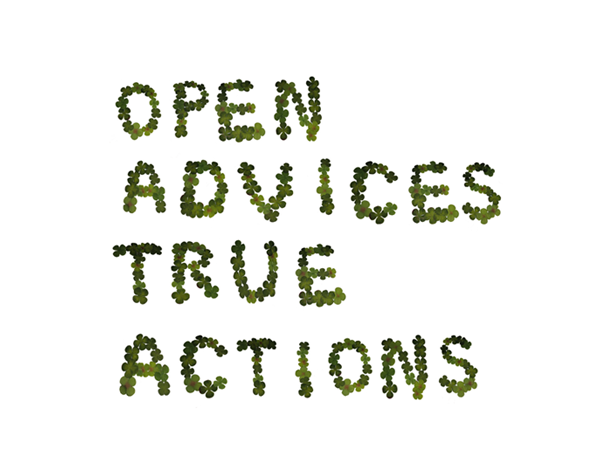
Ethos Campaign
Branding
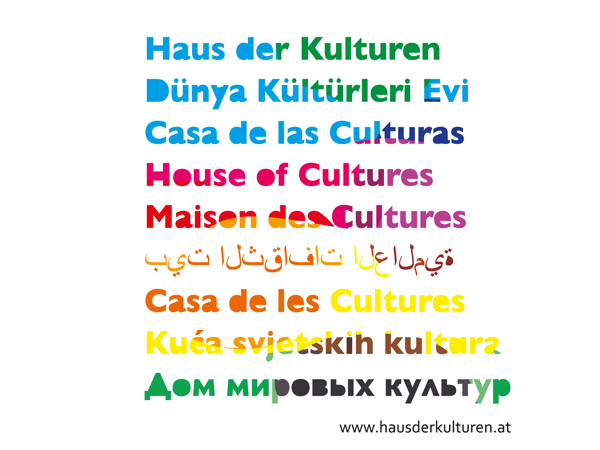
Branding & Corp. Communication
Master thesis
Education
I am a creative graphic designer with more than 15 years working experience and I hold a Masters degree in InterMedia
from the University of Applied Sciences in Vorarlberg and I also have a certificate diploma in
Web design & development from SAE Institute in Zurich.
Currently I am studying at the Zurich University of the Arts, the CAS Type & Brand, which will be completed in January 2023.
-
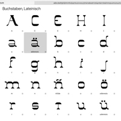
2022-2023
CAS Type & Brand
Type and typography are an integral part of contemporary brand design. Participants in the CAS Type & Brand learn how to investigate brands with respect to conceptional, strategic and design aspects and reflect on the importance of type and typography in the process.
-
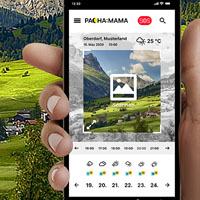
2021-2022
CAS Digital Typography – UI/UX Design
Designing user interfaces, code in HTML, CSS and Javascript and learning contemporary methods for the conception and presentation of digital projects such as apps and websites at the Zürcher Hochschule der Künste in Zurich
-
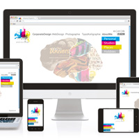
2014-2016
Diplom in web design and development
The world wide web is my new fascinating field. Although this new professional challenge begann only two years ago at SAE Institute in Zurich I have to admit that I have learned a lot and feel very confortable working in this new field.
-
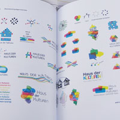
2009-2011
Master´s degree in Branding and Corporate Communication
Branding and communication are two interrelated words. The master´s degree at the University of Applied Sciences in Vorarlberg brought the theoretical and practical experience into the growing industry of visual and verbal communication.
-
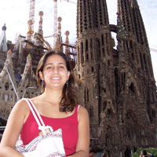
2005-2006
Postgraduate Diplom in Graphic design and Print production
Barcelona was my first and the best experience abroad that I have ever had. Living, studying and working in this amazing city brought me so many new perspectives in life. Studying at Elisava Escola de Disseny was definitely the best decision for me at that time.
-
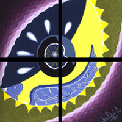
2000-2004
Baccalaureus Artium in Fine Arts
During my studies in Guayaquil (Ecuador) I did some internship at different ad agencies and newspapers. But most of the time I was working at my father´s printer Dupré artes gráficas where I collected the most valuable experience in the print area.
-
Born in
Ecuador
in 1981